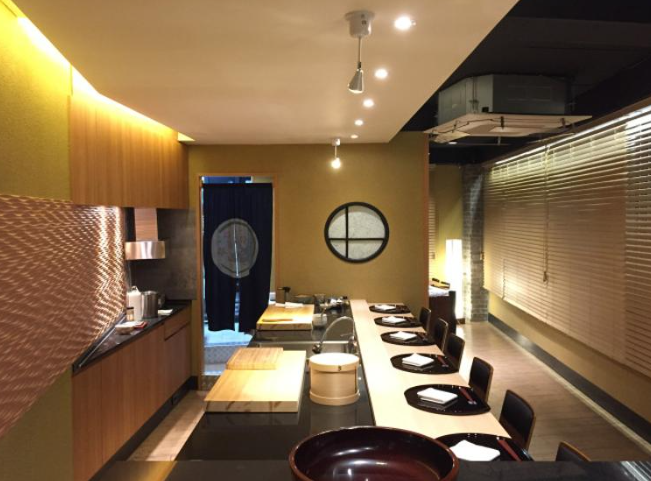
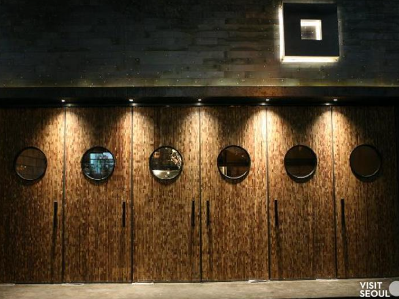

서울 맛집 리스트
1991년부터 국가무형문화재가 직접 운영하는 지화자는 서울의 중심부에 위치한 고급 전통 한식당
- 상호명
- 지화자
- 전화번호
- 02-2269-5834
- 이용시간
- 점심: 11:30 ~ 15:00
저녁: 17:30 ~ 22:00
- 대표 메뉴
-
- 장금만찬
- 진어별만찬
- 진어만찬
- 주소
- 서울 종로구 자하문로 125 (청운동)
- 홈페이지
- 바로가기

일본 긴자에서 접할 수 있는 작고 아담한 스타일의 고급 스시 전문점
- 상호명
- 스시 카이신
- 전화번호
- +82-2-515-9855
- 이용시간
- 매일 18:00~ 22:00 (예약 상황에 따라 오픈과 마감 시간이 상이)
- 대표 메뉴
-
- 오마카세
- 주소
- 서울 강남구 도산대로100길 12 (청담동, 우리빌딩 2층)
- 홈페이지
- 바로가기

숙성한 소고기 스테이크를 먹을 수 있는 곳으로 유명한 스테이크 전문점
- 상호명
- 구스테이크528
- 전화번호
- 02-511-0917
- 이용시간
- 매일 12:00 ~ 15:30 / 17:00 ~ 22:00
- 대표 메뉴
-
- 포터하우스/ 100g당 38,000원
- 티본/ 100g당 35,000원
- 본인립아이/ 100g당 35,000원
- 본인스트립/ 100g당 30,000원
- 주소
- 서울 강남구 압구정로 108 (신사동, 덕산빌딩)
- 홈페이지
- 바로가기